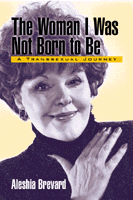

An absorbing autobiography of a transsexual
An absorbing autobiography of a transsexual


 An absorbing autobiography of a transsexual
An absorbing autobiography of a transsexual

|  |
The Woman I Was Not Born To BeA Transsexual JourneyAleshia Brevardpaper EAN: 978-1-56639-840-4 (ISBN: 1-56639-840-1) |
"...an entertaining and heartfelt journey from male to female, ostracism to acceptance, and obscurity to fame. ... Aleshia Brevard's journey is a brilliant, gutsy, and insightful look at a life simultaneously marginalized and in the spotlight."
—Lambda Book Report
Told with humor and flair, this is the autobiography of one transsexual's wild ride from boyhood as Alfred Brevard ("Buddy") Crenshaw in rural Tennessee to voluptuous female entertainer in Hollywood. Aleshia Brevard, as she is now known, underwent transitional surgery in Los Angeles in 1962, one of the first such operations in the United States. (The famous sexual surgery pioneer Harry Benjamin himself broke the news to Brevard's parents.)
Under the stage name Lee Shaw, Brevard worked as a drag queen at Finocchio's, a San Francisco club, doing Marilyn Monroe impersonations. (Like Marilyn, she sought romance all the time and had a string of entanglements with men.) Later, she worked as a stripper in Reno and as a Playboy Bunny at the Sunset Strip hutch.
After playing opposite Don Knotts in the movie The Love God, Brevard appeared in other films and broke into TV as a regular on the Red Skelton Show. She created the role of Tex on the daytime soap opera One Life To Live. As a woman, Brevard returned to teach theater at East Tennessee State, the same university she had attended as a boy.
This memoir is a rare pre-Women's Movement account of coming to terms with gender identity. Brevard writes frankly about the degree to which she organized her life around pleasing men, and how absurd it all seems to her now.
Excerpt available at www.temple.edu/tempress
"The Woman I Was not Born to Be is not the kind of book one really expects from an academic press: no statistics, no elaborate theoretical structure. Nor is it the story of people whom history has utterly ignored. Mocked, crucified, tortured, and jailed, yes; ignored, no. But I'm glad Temple University Press chose to publish it: in academia as in real life, a reasonably well-adjusted, kind-hearted woman who was born male is not so common."
—Amy Bloom, Wilson Quarterly
"Brevard's story adds an entertaining curve to the growing body of literature—academic scientific, theoretical and literary—on transgendered experience, without the self-pity or sentimentality found in many such memoirs....Written in a gossipy style reminiscent of 1950's movie-star autobiographies (which at heart, it is)."
—Publishers Weekly
"Aleshia Brevard's transformation from an awkward southern boy to Hollywood B-movie starlet is one of the most amazing tales I've ever read. It's filled with madcap adventures, sexual escapades, hart-breaking pain, great loves and great losses. This is a beautiful book, written with a glittering charm and humor and wisdom."
—Jonathan Ames, author of The Extra Man
"Alfred 'Buddy' Crenshaw hailed from rural Tennessee and eventually worked in San Francisco's famous nightclub Finocchio's as drag diva Lee Shaw. � He was a smash but found life schizoid because the 'real' world demanded that he dress and act as a man. Wanting to be accepted as a woman at all times, he resorted to self-castration in the early days of transgender surgery. Finally, after hormone therapy, he underwent the surgical sexual reassignment that allowed him to become Aleshia Brevard, the buxom b-movie actress he had presumably always felt he was."
—Whitney Scott for Booklist
"Aleshia's reflective nature delves deep into the heart of what it means to be gender dysphori; whether exploring that grey area between drag and transsexuality, the angst over whether or not to disclose one's past to new acquaintances, or the daily obstacles of suddenly becoming, what was at the time, the second class gender. Her memoir nicely documents the world of pre-Stonewall drag and transformation, as well as the early reassignment surgery and their painful procedures including primitive dilators and self-castrations (it was illegal for doctors to remove testicles). But Aleshia maintains her ever healthy, punditty perspective throughout:
As the doctor packed and repacked my new vagina, they crammed enough cotton padding inside me to resurrect the plantation system in at least two Delta states! The Old south might rise again, but I never would."
—Aaron Jason for Lambda Book Report
"Aleshia Brevard has gone from man to woman and from drag performer to B-movie star, but her most arduous journey has been her lifelong quest for independence."
—The Advocate
Visit www.AleshiaBrevard.com.
1. Just for a Change
2. Farm Boy
3. Drag Queen
4. A Man in the House
5. Alfred, Adieu
6. The Coed
7. Burlesque Queen
8. Miss Congeniality
9. Call Me Mrs.
10. Teacher! Teacher!
11. A Playboy Bunny
12. That Female Bunch
13. Fashion�s Guru
14. Off-Broadway Baby
15. A Faceless Intruder
16. Mother�s Final gift
17. The Finished Produce
Index
 | Aleshia Brevard continues to be active in theater as an actress and director. |
Gender Studies
Biography/Memoir/Autobiography
© 2016 Temple University. All Rights Reserved. This page: http://www.temple.edu/tempress/titles/1520_reg.html.